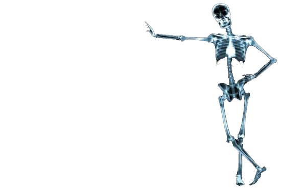

眼如纯水
世界不缺少美，缺少的发现美的眼睛。当你从梦中醒来的时候，请擦亮双眼，因为这个世界每时每刻都在期待着你能够发现他的美。
眼睛，乃心灵的窗户。透过窗户看世界，我们需要一双纯粹的眼，才能看的真真切切。容不下沙的眼，才是一双纯净的眼。
让我们回到婴儿时代，带着天真无邪、无忧无虑、纯净透明的双眼上路。
心灵如纯水
哲人往往会说，心灵美的人看到的世界也是美的。
心灵是灵魂的象征。心灵美，灵魂也纯净；心肠坏，灵魂也污浊。
都说没有灵魂的人都是一副行尸走肉。在离开世界的时候，传说浑浊的灵魂会前往阴曹地府，去到痛苦、黑暗的地方；高尚的灵魂会飞升天堂，去往幸福的地方。
人生在世，就是为了洗涤自己的灵魂。让它更加的纯净，更加透明。洗涤心灵，洗涤灵魂，升华情操。
